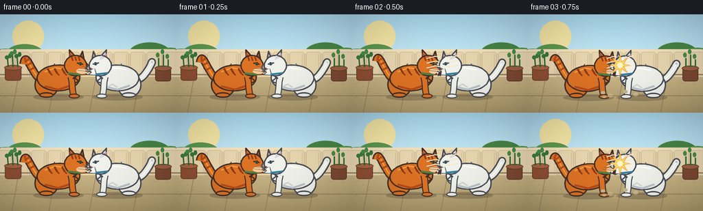
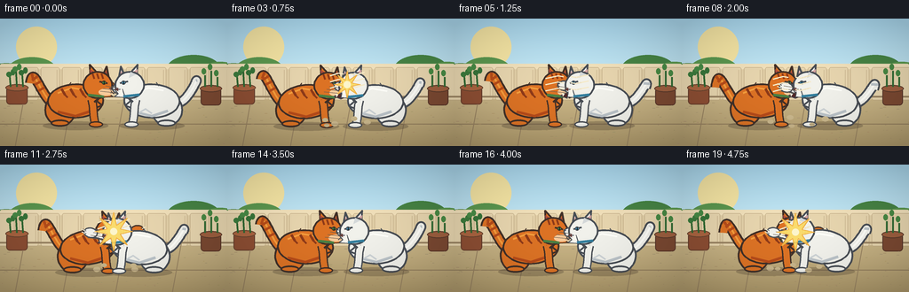

CODING AGENTS AS PIXEL WORLD MODELS
traex/GPT-5.6-Sol · instance_preservation_0005
点击播放 · 原生 RGB 像素
逐轮保存的候选
回放视频、检查图与代码变化。
每份候选均可单独播放。实际图片检查记录在下方工具轨迹中。
候选 01播放与检查图
点击播放 · 原生 RGB 像素


展开代码变化
--- 上一保存版本
+++ 本次保存版本
@@ -0,0 +1,260 @@
+from pathlib import Path
+import math, random
+import numpy as np
+from PIL import Image, ImageDraw, ImageFilter
+import artifact_io
+
+W,H,N,S = 256,144,20,4
+random.seed(12)
+
+def sc(v): return int(round(v*S))
+def pts(arr): return [(sc(x),sc(y)) for x,y in arr]
+def oval_points(cx,cy,rx,ry,ang=0,n=48):
+ a=math.radians(ang); ca,sa=math.cos(a),math.sin(a)
+ out=[]
+ for i in range(n):
+ t=2*math.pi*i/n; x=rx*math.cos(t); y=ry*math.sin(t)
+ out.append((cx+x*ca-y*sa, cy+x*sa+y*ca))
+ return out
+
+def poly(d,p,fill,outline=None,width=1):
+ d.polygon(pts(p),fill=fill)
+ if outline: d.line(pts(p+[p[0]]),fill=outline,width=sc(width),joint='curve')
+def ellipse(d,b,fill,outline=None,width=1):
+ d.ellipse(tuple(sc(x) for x in b),fill=fill,outline=outline,width=sc(width) if outline else 1)
+def line(d,p,fill,width=1,joint='curve'):
+ d.line(pts(p),fill=fill,width=sc(width),joint=joint)
+def bezier(p0,p1,p2,p3,n=28):
+ r=[]
+ for i in range(n):
+ t=i/(n-1); u=1-t
+ r.append((u**3*p0[0]+3*u*u*t*p1[0]+3*u*t*t*p2[0]+t**3*p3[0],
+ u**3*p0[1]+3*u*u*t*p1[1]+3*u*t*t*p2[1]+t**3*p3[1]))
+ return r
+
+def rr(d,b,r,fill,outline=None,width=1):
+ d.rounded_rectangle(tuple(sc(x) for x in b),radius=sc(r),fill=fill,outline=outline,width=sc(width))
+
+def background(frame):
+ im=Image.new('RGB',(W*S,H*S)); p=im.load()
+ # warm, clean courtyard gradient
+ for y in range(H*S):
+ yy=y/(H*S)
+ if yy<.55:
+ u=yy/.55; col=(int(170+32*u),int(216+19*u),int(238+7*u))
+ else:
+ u=(yy-.55)/.45; col=(int(205-28*u),int(185-29*u),int(139-30*u))
+ for x in range(W*S): p[x,y]=col
+ d=ImageDraw.Draw(im)
+ # soft sun
+ ellipse(d,(18,9,64,55),(245,229,164))
+ # distant greenery behind fence
+ for i,(x,y,r,c) in enumerate([(7,63,23,(80,134,73)),(36,59,28,(91,151,79)),(218,58,31,(71,132,69)),(248,62,24,(89,151,77)),(188,65,17,(106,157,80))]):
+ ellipse(d,(x-r,y-r*.55,x+r,y+r*.55),c)
+ # fence, boards and cap
+ rr(d,(0,53,256,91),1,(225,206,166))
+ rr(d,(0,51,256,57),2,(242,225,187))
+ for x in range(-2,260,24):
+ rr(d,(x,55,x+21,92),2,(232,214,175),(190,168,130),.5)
+ line(d,[(x+18,58),(x+18,88)],(211,191,153),1)
+ line(d,[(0,88),(256,88)],(155,133,100),2)
+ # patio flagstones
+ line(d,[(0,119),(256,119)],(147,127,94),1)
+ for x in [27,81,140,204]: line(d,[(x,89),(x-10,144)],(153,132,98),1)
+ # planters at sides
+ rr(d,(7,77,31,97),4,(142,79,52),(102,61,44),1)
+ ellipse(d,(6,74,32,82),(171,101,65),(104,68,47),1)
+ for x,h,c in [(12,12,(61,124,62)),(19,18,(72,139,70)),(26,14,(55,117,58))]:
+ line(d,[(x,77),(x-1,77-h)],(48,104,50),2)
+ ellipse(d,(x-5,72-h,x+1,78-h),c)
+ ellipse(d,(x,69-h,x+5,76-h),c)
+ rr(d,(226,78,249,98),4,(123,73,50),(88,54,42),1)
+ ellipse(d,(225,75,250,83),(157,95,63),(91,58,43),1)
+ for x,h in [(231,13),(238,18),(245,11)]:
+ line(d,[(x,77),(x,77-h)],(49,106,52),2)
+ ellipse(d,(x-4,69-h,x+1,76-h),(72,137,68))
+ # subtle ground grain
+ rng=random.Random(44)
+ for _ in range(85):
+ x=rng.randrange(0,256); y=rng.randrange(95,143)
+ col=(170+rng.randrange(-8,10),149+rng.randrange(-7,9),108+rng.randrange(-5,9))
+ line(d,[(x,y),(x+rng.choice([1,2,3]),y)],col,.5)
+ return im
+
+def cat_shadow(layer,cx,cy,compression=1):
+ d=ImageDraw.Draw(layer,'RGBA')
+ ellipse(d,(cx-37,cy+23,cx+37,cy+33),(54,42,32,65))
+
+def draw_cat(layer,cx,cy,direction,kind,attack,raised,body_ang,frame,intensity):
+ d=ImageDraw.Draw(layer,'RGBA')
+ orange = kind=='orange'
+ outline=(65,48,40,255) if orange else (72,77,84,255)
+ fur=(221,115,37,255) if orange else (242,242,236,255)
+ shade=(183,76,26,255) if orange else (188,196,201,255)
+ light=(246,159,62,255) if orange else (255,255,250,255)
+ rear=-direction
+ # tail, always unmistakably attached to rear
+ root=(cx+rear*27,cy+2)
+ if orange:
+ end=(cx+rear*48,cy-20-5*math.sin(frame*.55))
+ curve=bezier(root,(cx+rear*40,cy-9),(cx+rear*48,cy-42),(end[0]+rear*3,end[1]))
+ else:
+ end=(cx+rear*49,cy-17-4*math.cos(frame*.43))
+ curve=bezier(root,(cx+rear*40,cy+5),(cx+rear*55,cy-33),(end[0],end[1]))
+ line(d,curve,outline,12)
+ line(d,curve,fur,8)
+ line(d,curve[:-5],light,2)
+ # orange tail rings / white gray tip
+ for frac in ([.35,.50,.65,.80] if orange else [.86]):
+ j=int(frac*(len(curve)-1)); p0=curve[max(0,j-1)]; p1=curve[min(len(curve)-1,j+1)]
+ vx=p1[0]-p0[0]; vy=p1[1]-p0[1]; ln=max(1,math.hypot(vx,vy)); nx=-vy/ln; ny=vx/ln
+ line(d,[(curve[j][0]-nx*4,curve[j][1]-ny*4),(curve[j][0]+nx*4,curve[j][1]+ny*4)],shade,3)
+ # rear haunch and planted rear paw
+ hx=cx+rear*17
+ poly(d,oval_points(hx,cy+10,17,18,body_ang*.5),fur,outline,2)
+ ellipse(d,(hx-11,cy+21,hx+10,cy+29),fur,outline,2)
+ # torso
+ torso=oval_points(cx,cy,31,19,body_ang)
+ poly(d,torso,fur,outline,2)
+ # underside shading and back highlight
+ line(d,[(cx-20,cy+12),(cx,cy+17),(cx+18,cy+11)],shade,3)
+ line(d,[(cx-20,cy-9),(cx-4,cy-15),(cx+13,cy-12)],light,2)
+ # stable fur markings tied to body
+ if orange:
+ for off in [-14,-4,7,17]:
+ xx=cx+off
+ line(d,[(xx-direction*2,cy-14),(xx+direction*2,cy-7)],(142,58,25,255),3)
+ line(d,[(xx+direction*2,cy-7),(xx+direction*5,cy-4)],(142,58,25,255),2)
+ else:
+ # subtle cool flank shadow tuft, body remains clearly white
+ line(d,[(cx-14,cy+13),(cx-7,cy+9),(cx,cy+14)],(205,211,214,255),2)
+ # chest ruff
+ neckx=cx+direction*20
+ tufts=[(neckx-direction*3,cy-11),(neckx+direction*8,cy-5),(neckx+direction*4,cy),(neckx+direction*10,cy+5),(neckx,cy+9)]
+ poly(d,tufts,fur,outline,2)
+ # front limbs: rear foreleg planted, active foreleg raised/swats
+ shoulder=(cx+direction*18,cy-2)
+ planted_end=(cx+direction*23,cy+27)
+ planted=bezier(shoulder,(shoulder[0]+direction*3,cy+8),(planted_end[0]-direction*4,cy+19),planted_end)
+ line(d,planted,outline,10); line(d,planted,fur,7)
+ ellipse(d,(planted_end[0]-8,planted_end[1]-4,planted_end[0]+8,planted_end[1]+3),fur,outline,1.5)
+ # active paw position: aimed across the gap as attack increases
+ headx=cx+direction*25
+ targetx=headx+direction*(8+22*attack)
+ targety=cy-11-8*raised+3*math.sin(frame*1.7 + (0 if orange else 1))
+ elbow=(shoulder[0]+direction*(8+8*attack), cy-3-9*raised)
+ arm=bezier(shoulder,(shoulder[0]+direction*6,cy-8),elbow,(targetx,targety))
+ line(d,arm,outline,11); line(d,arm,fur,7)
+ # paw/individual toes
+ poly(d,oval_points(targetx,targety,7.5,5.5,-direction*12),fur,outline,1.5)
+ for yy in [-2,1]: line(d,[(targetx+direction*5,targety+yy),(targetx+direction*8,targety+yy-1)],outline,1)
+ if attack>.72:
+ # tiny pale claw accents, non-graphic
+ for yy in [-2,1]: line(d,[(targetx+direction*6,targety+yy),(targetx+direction*10,targety+yy-2)],(245,239,214,255),1)
+ # head / ears
+ heady=cy-18
+ # ears behind skull
+ ear1=[(headx-direction*8,heady-8),(headx-direction*9,heady-23),(headx+direction*1,heady-12)]
+ ear2=[(headx+direction*5,heady-9),(headx+direction*10,heady-21),(headx+direction*13,heady-5)]
+ poly(d,ear1,fur,outline,2); poly(d,ear2,fur,outline,2)
+ inner=(171,75,62,255) if orange else (215,164,162,255)
+ a=ear1; poly(d,[(a[0][0],a[0][1]-2),(a[1][0],a[1][1]+5),(a[2][0],a[2][1])],inner)
+ a=ear2; poly(d,[(a[0][0],a[0][1]-1),(a[1][0],a[1][1]+5),(a[2][0]-direction*2,a[2][1]-1)],inner)
+ poly(d,oval_points(headx,heady,16,15,direction*4),fur,outline,2)
+ # cheek fluff
+ cheek=[(headx+direction*8,heady+5),(headx+direction*17,heady+5),(headx+direction*13,heady+10),(headx+direction*17,heady+13),(headx+direction*5,heady+14)]
+ poly(d,cheek,fur,outline,1)
+ # forehead stripes or gray brow marking
+ if orange:
+ for off in [-5,0,5]: line(d,[(headx+off-direction*1,heady-13),(headx+off+direction*1,heady-7)],(142,58,25,255),2)
+ else:
+ poly(d,[(headx-direction*7,heady-12),(headx-direction*1,heady-15),(headx+direction*1,heady-8)],(213,217,218,255))
+ # collar ensures persistent identity
+ collar=(53,127,158,255) if not orange else (74,128,68,255)
+ line(d,[(headx-direction*11,heady+11),(headx+direction*7,heady+13)],collar,3)
+ # narrowed eye facing opponent
+ eyex=headx+direction*7; eyey=heady-3
+ line(d,[(eyex-direction*5,eyey-1),(eyex+direction*4,eyey+1)],outline,2)
+ iris=(79,151,72,255) if orange else (74,150,190,255)
+ ellipse(d,(eyex-2.5,eyey-2,eyex+2.5,eyey+2.5),iris,outline,1)
+ line(d,[(eyex,eyey-1),(eyex,eyey+2)],(20,25,22,255),1)
+ # nose, muzzle, angry open mouth with harmless tiny teeth
+ nosex=headx+direction*15; nosey=heady+5
+ poly(d,[(nosex-direction*2,nosey-2),(nosex+direction*2,nosey),(nosex-direction*2,nosey+2)],(104,59,57,255))
+ muzzle=(248,202,154,255) if orange else (250,248,238,255)
+ ellipse(d,(headx+direction*6-5,heady+4,headx+direction*13+5,heady+12),muzzle)
+ mouth_open=intensity>.35
+ if mouth_open:
+ mouth=[(nosex-direction*2,nosey+3),(nosex+direction*7,nosey+7),(nosex-direction*1,nosey+10)]
+ poly(d,mouth,(81,42,43,255),outline,1)
+ tooth=[(nosex+direction*2,nosey+5),(nosex+direction*4,nosey+8),(nosex+direction*5,nosey+4)]
+ poly(d,tooth,(255,249,222,255))
+ else:
+ line(d,[(nosex,nosey+2),(nosex+direction*3,nosey+5)],outline,1)
+ # whiskers sweep forward consistently
+ for dy in [-2,1,4]:
+ line(d,[(nosex-direction*1,nosey+dy),(nosex+direction*(14+dy),nosey+dy-2)],(78,70,62,210),.8)
+ # a few contour fur flicks
+ line(d,[(cx-direction*8,cy-17),(cx-direction*5,cy-21)],outline,1)
+ return (targetx,targety),(headx,heady)
+
+def motion_effects(layer,frame,opaw,wpaw,intensity):
+ d=ImageDraw.Draw(layer,'RGBA')
+ mx=(opaw[0]+wpaw[0])/2; my=(opaw[1]+wpaw[1])/2
+ if intensity>.32:
+ # curved-looking speed marks around repeated swats
+ for k in range(3):
+ y=my-12+k*7
+ xoff=(1-intensity)*10
+ line(d,[(mx-18-xoff,y+2),(mx-10,y-1),(mx-4,y)],(255,248,217,150),1.5)
+ line(d,[(mx+18+xoff,y-2),(mx+10,y+1),(mx+4,y)],(255,248,217,150),1.5)
+ if intensity>.73:
+ # restrained comic impact flash behind paws
+ r=5+7*(intensity-.73)/.27
+ star=[]
+ for i in range(16):
+ a=i*math.pi/8; rad=r*(1.8 if i%2==0 else .65)
+ star.append((mx+math.cos(a)*rad,my+math.sin(a)*rad))
+ poly(d,star,(255,222,94,205),(244,171,50,210),1)
+ ellipse(d,(mx-4,my-4,mx+4,my+4),(255,250,208,230))
+ # drifting dust at feet during lunges
+ if intensity>.5:
+ for k in range(5):
+ ang=(frame*.83+k*1.39); x=128+math.cos(ang)*(20+4*k); y=118+math.sin(ang)*4-k*.8
+ ellipse(d,(x-3-k*.25,y-2-k*.2,x+3+k*.25,y+2+k*.2),(232,218,184,75))
+
+# Carefully staged animation curves: orange swat, white counter, mutual clash, recoil, relunge.
+orange_x=[85,86,87,89,91,90,88,87,89,93,97,99,97,93,88,85,86,89,94,98]
+white_x =[171,170,169,167,165,166,168,169,167,163,159,157,159,163,168,171,170,167,162,158]
+orange_attack=[.18,.35,.62,.92,.72,.30,.20,.18,.38,.66,.93,1,.86,.45,.18,.12,.25,.55,.86,.98]
+white_attack =[.18,.18,.22,.28,.25,.42,.70,.96,.75,.55,.91,1,.89,.50,.20,.12,.28,.60,.88,.98]
+intensities=[.15,.25,.5,.86,.65,.38,.62,.88,.68,.65,.90,1,.88,.52,.25,.10,.25,.62,.88,1]
+
+frames=[]
+for f in range(N):
+ # a tiny impact camera shake, preserving scene coherence
+ shake=0
+ if intensities[f]>.85: shake = -1 if f%2 else 1
+ im=background(f)
+ layer=Image.new('RGBA',im.size,(0,0,0,0))
+ cy=93 + (1 if f in [3,7,11,18] else 0) + shake*.3
+ cat_shadow(layer,orange_x[f],cy)
+ cat_shadow(layer,white_x[f],cy)
+ # bodies lean toward center in attacks, then visibly recoil
+ oa=orange_attack[f]; wa=white_attack[f]
+ orangepaw,_=draw_cat(layer,orange_x[f],cy,+1,'orange',oa,.55+oa*.45,-5*oa+3*(f in [14,15]),f,intensities[f])
+ whitepaw,_=draw_cat(layer,white_x[f],cy,-1,'white',wa,.55+wa*.45,5*wa-3*(f in [14,15]),f,intensities[f])
+ motion_effects(layer,f,orangepaw,whitepaw,intensities[f])
+ im=Image.alpha_composite(im.convert('RGBA'),layer)
+ # warm vignette and slight filmic depth
+ arr=np.array(im.convert('RGB')).astype(np.float32)
+ yy,xx=np.mgrid[0:H*S,0:W*S]; nx=(xx-W*S/2)/(W*S/2); ny=(yy-H*S/2)/(H*S/2)
+ vig=np.clip(1-.10*(nx*nx+ny*ny),.82,1)[...,None]
+ arr=np.clip(arr*vig,0,255).astype(np.uint8)
+ small=Image.fromarray(arr).resize((W,H),Image.Resampling.LANCZOS)
+ frames.append(np.array(small,dtype=np.uint8))
+
+frames=np.stack(frames)
+assert frames.shape==(20,144,256,3) and frames.dtype==np.uint8
+artifact_io.save(frames,Path(__file__).resolve().parent)
+print('saved',frames.shape,'range',frames.min(),frames.max())
可观测工具轨迹
实际执行的命令与返回图片。
命令 1exit 0
/bin/bash -lc "cat prompt.txt && printf '\\n--- GENERATION_RULES ---\\n' && cat GENERATION_RULES.md && printf '\\n--- TASK_SPEC ---\\n' && cat task_spec.json"
命令 2exit 0
/bin/bash -lc "find . -maxdepth 2 -type f -printf '%p %s bytes\\n' | sort && printf '\\nTools:\\n' && command -v ffmpeg && command -v python3 && command -v convert || true"
命令 3exit 0
/bin/bash -lc "sed -n '1,240p' artifact_io.py && python3 - <<'PY'
import PIL,numpy
print('PIL',PIL.__version__,'numpy',numpy.__version__)
PY
command -v ffmpeg || true"命令 4exit 0
/bin/bash -lc "cat > generate.py <<'PY'
from pathlib import Path
import math, random
import numpy as np
from PIL import Image, ImageDraw, ImageFilter
import artifact_io
W,H,N,S = 256,144,20,4
random.seed(12)
def sc(v): return int(round(v*S))
def pts(arr): return [(sc(x),sc(y)) for x,y in arr]
def oval_points(cx,cy,rx,ry,ang=0,n=48):
a=math.radians(ang); ca,sa=math.cos(a),math.sin(a)
out=[]
for i in range(n):
t=2*math.pi*i/n; x=rx*math.cos(t); y=ry*math.sin(t)
out.append((cx+x*ca-y*sa, cy+x*sa+y*ca))
return out
def poly(d,p,fill,outline=None,width=1):
d.polygon(pts(p),fill=fill)
if outline: d.line(pts(p+[p[0]]),fill=outline,width=sc(width),joint='curve')
def ellipse(d,b,fill,outline=None,width=1):
d.ellipse(tuple(sc(x) for x in b),fill=fill,outline=outline,width=sc(width) if outline else 1)
def line(d,p,fill,width=1,joint='curve'):
d.line(pts(p),fill=fill,width=sc(width),joint=joint)
def bezier(p0,p1,p2,p3,n=28):
r=[]
for i in range(n):
t=i/(n-1); u=1-t
r.append((u**3*p0[0]+3*u*u*t*p1[0]+3*u*t*t*p2[0]+t**3*p3[0],
u**3*p0[1]+3*u*u*t*p1[1]+3*u*t*t*p2[1]+t**3*p3[1]))
return r
def rr(d,b,r,fill,outline=None,width=1):
d.rounded_rectangle(tuple(sc(x) for x in b),radius=sc(r),fill=fill,outline=outline,width=sc(width))
def background(frame):
im=Image.new('RGB',(W*S,H*S)); p=im.load()
# warm, clean courtyard gradient
for y in range(H*S):
yy=y/(H*S)
if yy<.55:
u=yy/.55; col=(int(170+32*u),int(216+19*u),int(238+7*u))
else:
u=(yy-.55)/.45; col=(int(205-28*u),int(185-29*u),int(139-30*u))
for x in range(W*S): p[x,y]=col
d=ImageDraw.Draw(im)
# soft sun
ellipse(d,(18,9,64,55),(245,229,164))
# distant greenery behind fence
for i,(x,y,r,c) in enumerate([(7,63,23,(80,134,73)),(36,59,28,(91,151,79)),(218,58,31,(71,132,69)),(248,62,24,(89,151,77)),(188,65,17,(106,157,80))]):
ellipse(d,(x-r,y-r*.55,x+r,y+r*.55),c)
# fence, boards and cap
rr(d,(0,53,256,91),1,(225,206,166))
rr(d,(0,51,256,57),2,(242,225,187))
for x in range(-2,260,24):
rr(d,(x,55,x+21,92),2,(232,214,175),(190,168,130),.5)
line(d,[(x+18,58),(x+18,88)],(211,191,153),1)
line(d,[(0,88),(256,88)],(155,133,100),2)
# patio flagstones
line(d,[(0,119),(256,119)],(147,127,94),1)
for x in [27,81,140,204]: line(d,[(x,89),(x-10,144)],(153,132,98),1)
# planters at sides
rr(d,(7,77,31,97),4,(142,79,52),(102,61,44),1)
ellipse(d,(6,74,32,82),(171,101,65),(104,68,47),1)
for x,h,c in [(12,12,(61,124,62)),(19,18,(72,139,70)),(26,14,(55,117,58))]:
line(d,[(x,77),(x-1,77-h)],(48,104,50),2)
ellipse(d,(x-5,72-h,x+1,78-h),c)
ellipse(d,(x,69-h,x+5,76-h),c)
rr(d,(226,78,249,98),4,(123,73,50),(88,54,42),1)
ellipse(d,(225,75,250,83),(157,95,63),(91,58,43),1)
for x,h in [(231,13),(238,18),(245,11)]:
line(d,[(x,77),(x,77-h)],(49,106,52),2)
ellipse(d,(x-4,69-h,x+1,76-h),(72,137,68))
# subtle ground grain
rng=random.Random(44)
for _ in range(85):
x=rng.randrange(0,256); y=rng.randrange(95,143)
col=(170+rng.randrange(-8,10),149+rng.randrange(-7,9),108+rng.randrange(-5,9))
line(d,[(x,y),(x+rng.choice([1,2,3]),y)],col,.5)
return im
def cat_shadow(layer,cx,cy,compression=1):
d=ImageDraw.Draw(layer,'RGBA')
ellipse(d,(cx-37,cy+23,cx+37,cy+33),(54,42,32,65))
def draw_cat(layer,cx,cy,direction,kind,attack,raised,body_ang,frame,intensity):
d=ImageDraw.Draw(layer,'RGBA')
orange = kind=='orange'
outline=(65,48,40,255) if orange else (72,77,84,255)
fur=(221,115,37,255) if orange else (242,242,236,255)
shade=(183,76,26,255) if orange else (188,196,201,255)
light=(246,159,62,255) if orange else (255,255,250,255)
rear=-direction
# tail, always unmistakably attached to rear
root=(cx+rear*27,cy+2)
if orange:
end=(cx+rear*48,cy-20-5*math.sin(frame*.55))
curve=bezier(root,(cx+rear*40,cy-9),(cx+rear*48,cy-42),(end[0]+rear*3,end[1]))
else:
end=(cx+rear*49,cy-17-4*math.cos(frame*.43))
curve=bezier(root,(cx+rear*40,cy+5),(cx+rear*55,cy-33),(end[0],end[1]))
line(d,curve,outline,12)
line(d,curve,fur,8)
line(d,curve[:-5],light,2)
# orange tail rings / white gray tip
for frac in ([.35,.50,.65,.80] if orange else [.86]):
j=int(frac*(len(curve)-1)); p0=curve[max(0,j-1)]; p1=curve[min(len(curve)-1,j+1)]
vx=p1[0]-p0[0]; vy=p1[1]-p0[1]; ln=max(1,math.hypot(vx,vy)); nx=-vy/ln; ny=vx/ln
line(d,[(curve[j][0]-nx*4,curve[j][1]-ny*4),(curve[j][0]+nx*4,curve[j][1]+ny*4)],shade,3)
# rear haunch and planted rear paw
hx=cx+rear*17
poly(d,oval_points(hx,cy+10,17,18,body_ang*.5),fur,outline,2)
ellipse(d,(hx-11,cy+21,hx+10,cy+29),fur,outline,2)
# torso
torso=oval_points(cx,cy,31,19,body_ang)
poly(d,torso,fur,outline,2)
# underside shading and back highlight
line(d,[(cx-20,cy+12),(cx,cy+17),(cx+18,cy+11)],shade,3)
line(d,[(cx-20,cy-9),(cx-4,cy-15),(cx+13,cy-12)],light,2)
# stable fur markings tied to body
if orange:
for off in [-14,-4,7,17]:
xx=cx+off
line(d,[(xx-direction*2,cy-14),(xx+direction*2,cy-7)],(142,58,25,255),3)
line(d,[(xx+direction*2,cy-7),(xx+direction*5,cy-4)],(142,58,25,255),2)
else:
# subtle cool flank shadow tuft, body remains clearly white
line(d,[(cx-14,cy+13),(cx-7,cy+9),(cx,cy+14)],(205,211,214,255),2)
# chest ruff
neckx=cx+direction*20
tufts=[(neckx-direction*3,cy-11),(neckx+direction*8,cy-5),(neckx+direction*4,cy),(neckx+direction*10,cy+5),(neckx,cy+9)]
poly(d,tufts,fur,outline,2)
# front limbs: rear foreleg planted, active foreleg raised/swats
shoulder=(cx+direction*18,cy-2)
planted_end=(cx+direction*23,cy+27)
planted=bezier(shoulder,(shoulder[0]+direction*3,cy+8),(planted_end[0]-direction*4,cy+19),planted_end)
line(d,planted,outline,10); line(d,planted,fur,7)
ellipse(d,(planted_end[0]-8,planted_end[1]-4,planted_end[0]+8,planted_end[1]+3),fur,outline,1.5)
# active paw position: aimed across the gap as attack increases
headx=cx+direction*25
targetx=headx+direction*(8+22*attack)
targety=cy-11-8*raised+3*math.sin(frame*1.7 + (0 if orange else 1))
elbow=(shoulder[0]+direction*(8+8*attack), cy-3-9*raised)
arm=bezier(shoulder,(shoulder[0]+direction*6,cy-8),elbow,(targetx,targety))
line(d,arm,outline,11); line(d,arm,fur,7)
# paw/individual toes
poly(d,oval_points(targetx,targety,7.5,5.5,-direction*12),fur,outline,1.5)
for yy in [-2,1]: line(d,[(targetx+direction*5,targety+yy),(targetx+direction*8,targety+yy-1)],outline,1)
if attack>.72:
# tiny pale claw accents, non-graphic
for yy in [-2,1]: line(d,[(targetx+direction*6,targety+yy),(targetx+direction*10,targety+yy-2)],(245,239,214,255),1)
# head / ears
heady=cy-18
# ears behind skull
ear1=[(headx-direction*8,heady-8),(headx-direction*9,heady-23),(headx+direction*1,heady-12)]
ear2=[(headx+direction*5,heady-9),(headx+direction*10,heady-21),(headx+direction*13,heady-5)]
poly(d,ear1,fur,outline,2); poly(d,ear2,fur,outline,2)
inner=(171,75,62,255) if orange else (215,164,162,255)
a=ear1; poly(d,[(a[0][0],a[0][1]-2),(a[1][0],a[1][1]+5),(a[2][0],a[2][1])],inner)
a=ear2; poly(d,[(a[0][0],a[0][1]-1),(a[1][0],a[1][1]+5),(a[2][0]-direction*2,a[2][1]-1)],inner)
poly(d,oval_points(headx,heady,16,15,direction*4),fur,outline,2)
# cheek fluff
cheek=[(headx+direction*8,heady+5),(headx+direction*17,heady+5),(headx+direction*13,heady+10),(headx+direction*17,heady+13),(headx+direction*5,heady+14)]
poly(d,cheek,fur,outline,1)
# forehead stripes or gray brow marking
if orange:
for off in [-5,0,5]: line(d,[(headx+off-direction*1,heady-13),(headx+off+direction*1,heady-7)],(142,58,25,255),2)
else:
poly(d,[(headx-direction*7,heady-12),(headx-direction*1,heady-15),(headx+direction*1,heady-8)],(213,217,218,255))
# collar ensures persistent identity
collar=(53,127,158,255) if not orange else (74,128,68,255)
line(d,[(headx-direction*11,heady+11),(headx+direction*7,heady+13)],collar,3)
# narrowed eye facing opponent
eyex=headx+direction*7; eyey=heady-3
line(d,[(eyex-direction*5,eyey-1),(eyex+direction*4,eyey+1)],outline,2)
iris=(79,151,72,255) if orange else (74,150,190,255)
ellipse(d,(eyex-2.5,eyey-2,eyex+2.5,eyey+2.5),iris,outline,1)
line(d,[(eyex,eyey-1),(eyex,eyey+2)],(20,25,22,255),1)
# nose, muzzle, angry open mouth with harmless tiny teeth
nosex=headx+direction*15; nosey=heady+5
poly(d,[(nosex-direction*2,nosey-2),(nosex+direction*2,nosey),(nosex-direction*2,nosey+2)],(104,59,57,255))
muzzle=(248,202,154,255) if orange else (250,248,238,255)
ellipse(d,(headx+direction*6-5,heady+4,headx+direction*13+5,heady+12),muzzle)
mouth_open=intensity>.35
if mouth_open:
mouth=[(nosex-direction*2,nosey+3),(nosex+direction*7,nosey+7),(nosex-direction*1,nosey+10)]
poly(d,mouth,(81,42,43,255),outline,1)
tooth=[(nosex+direction*2,nosey+5),(nosex+direction*4,nosey+8),(nosex+direction*5,nosey+4)]
poly(d,tooth,(255,249,222,255))
else:
line(d,[(nosex,nosey+2),(nosex+direction*3,nosey+5)],outline,1)
# whiskers sweep forward consistently
for dy in [-2,1,4]:
line(d,[(nosex-direction*1,nosey+dy),(nosex+direction*(14+dy),nosey+dy-2)],(78,70,62,210),.8)
# a few contour fur flicks
line(d,[(cx-direction*8,cy-17),(cx-direction*5,cy-21)],outline,1)
return (targetx,targety),(headx,heady)
def motion_effects(layer,frame,opaw,wpaw,intensity):
d=ImageDraw.Draw(layer,'RGBA')
mx=(opaw[0]+wpaw[0])/2; my=(opaw[1]+wpaw[1])/2
if intensity>.32:
# curved-looking speed marks around repeated swats
for k in range(3):
y=my-12+k*7
xoff=(1-intensity)*10
line(d,[(mx-18-xoff,y+2),(mx-10,y-1),(mx-4,y)],(255,248,217,150),1.5)
line(d,[(mx+18+xoff,y-2),(mx+10,y+1),(mx+4,y)],(255,248,217,150),1.5)
if intensity>.73:
# restrained comic impact flash behind paws
r=5+7*(intensity-.73)/.27
star=[]
for i in range(16):
a=i*math.pi/8; rad=r*(1.8 if i%2==0 else .65)
star.append((mx+math.cos(a)*rad,my+math.sin(a)*rad))
poly(d,star,(255,222,94,205),(244,171,50,210),1)
ellipse(d,(mx-4,my-4,mx+4,my+4),(255,250,208,230))
# drifting dust at feet during lunges
if intensity>.5:
for k in range(5):
ang=(frame*.83+k*1.39); x=128+math.cos(ang)*(20+4*k); y=118+math.sin(ang)*4-k*.8
ellipse(d,(x-3-k*.25,y-2-k*.2,x+3+k*.25,y+2+k*.2),(232,218,184,75))
# Carefully staged animation curves: orange swat, white counter, mutual clash, recoil, relunge.
orange_x=[85,86,87,89,91,90,88,87,89,93,97,99,97,93,88,85,86,89,94,98]
white_x =[171,170,169,167,165,166,168,169,167,163,159,157,159,163,168,171,170,167,162,158]
orange_attack=[.18,.35,.62,.92,.72,.30,.20,.18,.38,.66,.93,1,.86,.45,.18,.12,.25,.55,.86,.98]
white_attack =[.18,.18,.22,.28,.25,.42,.70,.96,.75,.55,.91,1,.89,.50,.20,.12,.28,.60,.88,.98]
intensities=[.15,.25,.5,.86,.65,.38,.62,.88,.68,.65,.90,1,.88,.52,.25,.10,.25,.62,.88,1]
frames=[]
for f in range(N):
# a tiny impact camera shake, preserving scene coherence
shake=0
if intensities[f]>.85: shake = -1 if f%2 else 1
im=background(f)
layer=Image.new('RGBA',im.size,(0,0,0,0))
cy=93 + (1 if f in [3,7,11,18] else 0) + shake*.3
cat_shadow(layer,orange_x[f],cy)
cat_shadow(layer,white_x[f],cy)
# bodies lean toward center in attacks, then visibly recoil
oa=orange_attack[f]; wa=white_attack[f]
orangepaw,_=draw_cat(layer,orange_x[f],cy,+1,'orange',oa,.55+oa*.45,-5*oa+3*(f in [14,15]),f,intensities[f])
whitepaw,_=draw_cat(layer,white_x[f],cy,-1,'white',wa,.55+wa*.45,5*wa-3*(f in [14,15]),f,intensities[f])
motion_effects(layer,f,orangepaw,whitepaw,intensities[f])
im=Image.alpha_composite(im.convert('RGBA'),layer)
# warm vignette and slight filmic depth
arr=np.array(im.convert('RGB')).astype(np.float32)
yy,xx=np.mgrid[0:H*S,0:W*S]; nx=(xx-W*S/2)/(W*S/2); ny=(yy-H*S/2)/(H*S/2)
vig=np.clip(1-.10*(nx*nx+ny*ny),.82,1)[...,None]
arr=np.clip(arr*vig,0,255).astype(np.uint8)
small=Image.fromarray(arr).resize((W,H),Image.Resampling.LANCZOS)
frames.append(np.array(small,dtype=np.uint8))
frames=np.stack(frames)
assert frames.shape==(20,144,256,3) and frames.dtype==np.uint8
artifact_io.save(frames,Path(__file__).resolve().parent)
print('saved',frames.shape,'range',frames.min(),frames.max())
PY
python3 generate.py
ls -lh pixels.npz inspection.png transition_check.png index.html frames/00.png frames/19.png"命令 5exit 0
/bin/bash -lc "python3 - <<'PY'
from pathlib import Path
import numpy as np
from PIL import Image
fs=[]
for p in sorted(Path('frames').glob('*.png')):
a=np.array(Image.open(p))
assert a.shape==(144,256,3) and a.dtype==np.uint8 and Image.open(p).mode=='RGB'
fs.append(a)
fs=np.stack(fs)
print('frames:',len(fs), 'shape:',fs.shape, 'mode: RGB')
print('mean adjacent pixel deltas:', [round(float(np.abs(fs[i].astype(int)-fs[i-1]).mean()),2) for i in range(1,20)])
print('all required:', all(Path(x).exists() for x in ['pixels.npz','index.html','inspection.png','transition_check.png','generate.py']))
PY"视觉工具实际返回图片 1

视觉工具实际返回图片 2

保存候选 1 份；完成命令 5 次；可验证图片返回 2 张。原始 API 响应与完整日志保留在本地。